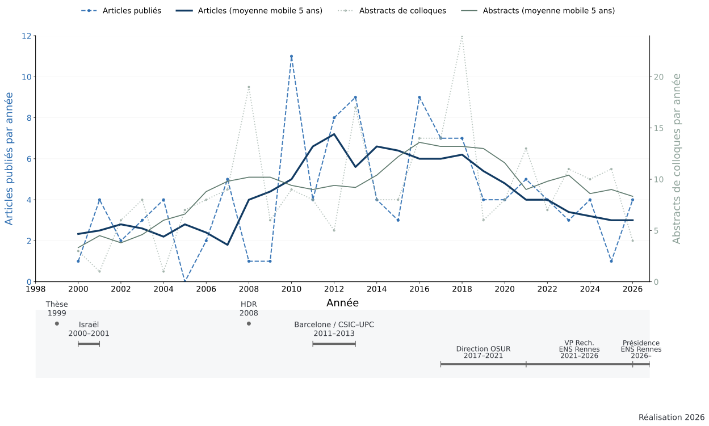

Publications au fil du temps
Le corpus comprend 114 articles, 256 abstracts de colloques et 14 proceedings. Le maximum annuel d’articles a été atteint en 2010 (11 articles) ; celui des abstracts en 2018 (24).

Afficher le tableau annuel des données
| Année | Articles | Abstracts | Proceedings |
|---|---|---|---|
| 2000 | 1 | 3 | 0 |
| 2001 | 4 | 1 | 0 |
| 2002 | 2 | 6 | 0 |
| 2003 | 3 | 7 | 1 |
| 2004 | 4 | 1 | 0 |
| 2005 | 0 | 5 | 2 |
| 2006 | 2 | 6 | 2 |
| 2007 | 5 | 9 | 1 |
| 2008 | 1 | 19 | 0 |
| 2009 | 1 | 5 | 2 |
| 2010 | 11 | 9 | 1 |
| 2011 | 4 | 9 | 0 |
| 2012 | 8 | 6 | 0 |
| 2013 | 9 | 20 | 1 |
| 2014 | 4 | 11 | 2 |
| 2015 | 3 | 11 | 0 |
| 2016 | 9 | 15 | 1 |
| 2017 | 7 | 17 | 0 |
| 2018 | 7 | 24 | 0 |
| 2019 | 4 | 6 | 0 |
| 2020 | 4 | 7 | 1 |
| 2021 | 5 | 15 | 0 |
| 2022 | 4 | 7 | 0 |
| 2023 | 3 | 12 | 0 |
| 2024 | 4 | 10 | 0 |
| 2025 | 1 | 11 | 0 |
| 2026 | 4 | 4 | 0 |